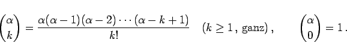

Inhalt Index DeskTop Bronstein

 Arithmetik Elementare Rechenregeln Ganzrationale Ausdrücke Binomischer Satz
Arithmetik Elementare Rechenregeln Ganzrationale Ausdrücke Binomischer Satz


Die Berechnung der Binomialkoeffizienten kann mit Hilfe der folgenden Formeln erfolgen:
Hinweis: Für beliebige reelle Zahlen ist der Binomialkoeffizient wie folgt definiert:
|  | (1.42) |
| Beispiel |
|
. |